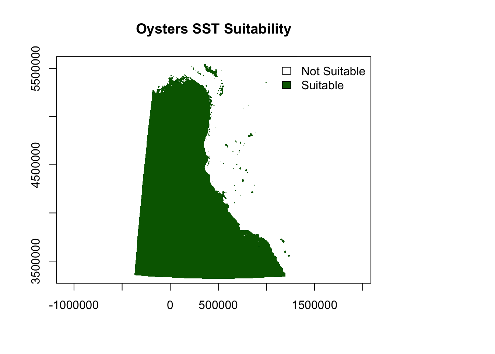
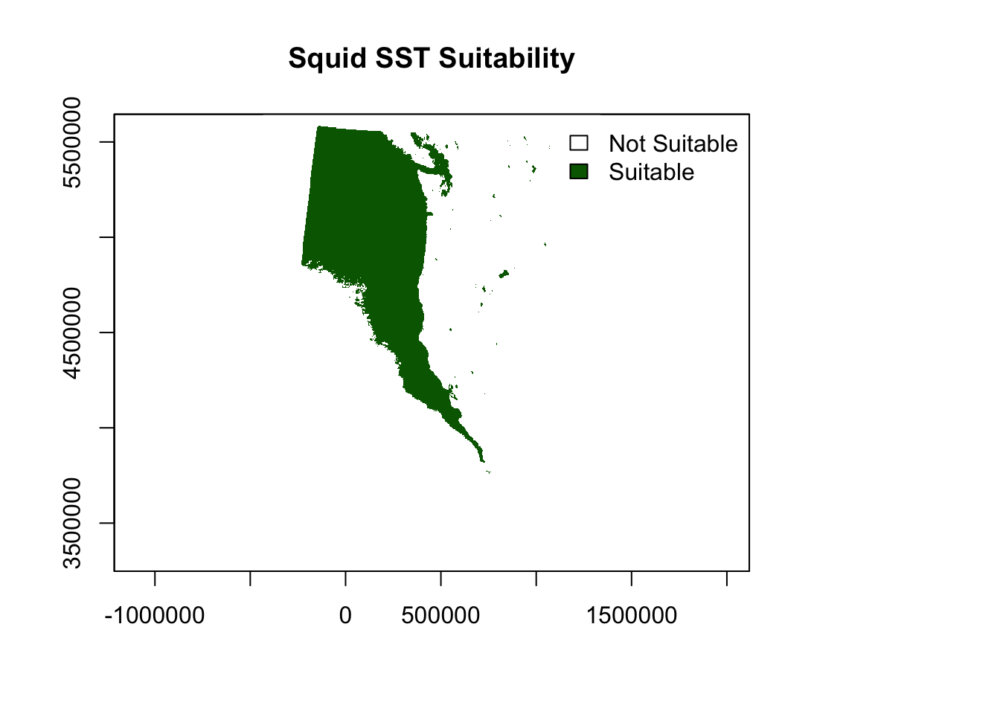

suppressMessages(library(here))
suppressMessages(library(terra))
suppressMessages(library(tidyverse))
suppressMessages(library(tmap))
suppressMessages(library(sp))
suppressMessages(library(sf))
suppressMessages(library(raster))EDS223-HW4
HW4: Prioritizing Potential Aquaculture
This document analyzes potential aquaculture regions based on sea surface temperature (SST) and depth constraints. We use oyster data as a case study and later generalize the workflow.
Load Packages
Load Data
set.seed(123)
# Load EEZ shapefile
eez_shape <- as_Spatial(
st_transform(
st_read(here("data", "wc_regions_clean.shp")),
crs = "+proj=utm +zone=10 +datum=WGS84")
)Reading layer `wc_regions_clean' from data source
`/Users/takeenshamloo/MEDS 2024-25/EDS223/hw4-takeenshamloo/data/wc_regions_clean.shp'
using driver `ESRI Shapefile'
Simple feature collection with 5 features and 5 fields
Geometry type: MULTIPOLYGON
Dimension: XY
Bounding box: xmin: -129.1635 ymin: 30.542 xmax: -117.097 ymax: 49.00031
Geodetic CRS: WGS 84# Load bathymetry raster
bathymetry_raster <- raster(here("data", "depth.tif"))
# Load SST raster stack
sst_raster_stack <- stack(
list.files(path = "data/",
pattern = "sst.*.tif",
full.names = TRUE)
)Data Preparation
Reproject Data
# Reproject datasets
bathymetry_raster <- projectRaster(bathymetry_raster, crs = "+proj=utm +zone=10 +datum=WGS84")
sst_raster_stack <- projectRaster(sst_raster_stack, crs = "+proj=utm +zone=10 +datum=WGS84")Calculate Mean SST and Convert to Celsius
# Mean SST (2008-2012)
sst_mean <- mean(sst_raster_stack[[names(sst_raster_stack)[grepl(paste(2008:2012, collapse = "|"), names(sst_raster_stack))]]], na.rm = TRUE)
sst_mean_celsius <- sst_mean - 273.15 # Convert SST from Kelvin to Celsius
sst_mean_celsius <- projectRaster(sst_mean_celsius, crs = "+proj=utm +zone=10 +datum=WGS84")Prepare Depth Data
# Align bathymetry raster with SST extent and resolution
bathymetry_raster <- resample(crop(bathymetry_raster, extent(sst_mean_celsius)), sst_mean_celsius, method = "ngb")Suitability Analysis for Oysters
Reclassify SST and Depth
# Define suitability ranges for oysters
species_name <- "Oysters"
min_sst <- 11 # Minimum SST in Celsius
max_sst <- 30 # Maximum SST in Celsius
min_depth <- 0 # Minimum depth in meters
max_depth <- 70 # Maximum depth in meters
# SST suitability classification
sst_suitability <- calc(sst_mean_celsius, fun = function(x) {
ifelse(is.na(x) | x <= min_sst | x >= max_sst, 0, 1)
})
# Depth suitability classification
depth_suitability <- calc(bathymetry_raster, fun = function(x) {
ifelse(is.na(x) |x <= min_depth | x >= max_depth, 0, 1)
})Zonal Analysis
set.seed(123)
# Combine SST and Depth suitability
combined_suitability <- overlay(depth_suitability, sst_suitability, fun = function(x, y) {
x * y
})
eez_raster <- rasterize(eez_shape, combined_suitability, field = "rgn_id", fun = mean)
# Perform Zonal Analysis to Summarize Total Suitable Area by EEZ
zonal_results <- zonal(combined_suitability, eez_raster, fun = "sum", na.rm = TRUE)
# Calculate cell grid
cell_area <- res(combined_suitability)[1] * res(combined_suitability)[2]
# Multiply by cell area to get the total area
total_cell_area <- zonal_results[,2] * cell_area
# Rename columns for clarity
colnames(zonal_results) <- c("region_id", "total_suitable_area")Visualize Suitability
# Adjust margins to make space for the legend
par(mar = c(5, 4, 4, 6)) # Increase right margin for the legend
# Plot SST Suitability
plot(
sst_suitability,
main = paste(species_name, "SST Suitability"),
col = c("white", "darkgreen"),
breaks = c(-0.5, 0.5, 1.5),
legend = FALSE
)
# Add the legend outside the plot
legend(
"topright",
legend = c("Not Suitable", "Suitable"),
fill = c("white", "darkgreen"),
bty = "n" # Remove legend border
)
# Plot Depth Suitability
plot(
depth_suitability,
main = paste(species_name, "Depth Suitability"),
col = c("white", "blue"),
breaks = c(-0.5, 0.5, 1.5),
legend = FALSE
)
legend(
"topright",
legend = c("Not Suitable", "Suitable"),
fill = c("white", "blue"),
bty = "n"
)
# Plot Combined Suitability
plot(
combined_suitability,
main = paste(species_name, "Combined Suitability"),
col = c("white", "red"),
breaks = c(-0.5, 0.5, 1.5),
legend = FALSE
)
legend(
"topright",
legend = c("Not Suitable", "Suitable"),
fill = c("white", "red"),
bty = "n"
)
# Reset margins to default
par(mar = c(5, 4, 4, 2))
eez_shape$Total_Area <- total_cell_area
print(paste(species_name, "Zonal Results:"))[1] "Oysters Zonal Results:"print(head(eez_shape@data[, c("rgn_id", "Total_Area")])) rgn_id Total_Area
1 1 131577600
2 2 32894400
3 3 164472000
4 4 427627200
5 5 575652000General Function for Suitability Analysis
calculate_habitat_suitability <- function(sst_raster_stack, bathymetry_raster, eez_shape,
min_sst, max_sst, min_depth, max_depth, species_name) {
set.seed(123)
# Reproject data to UTM Zone 10N CRS
bathymetry_raster <- projectRaster(bathymetry_raster, crs = "+proj=utm +zone=10 +datum=WGS84")
sst_raster_stack <- projectRaster(sst_raster_stack, crs = "+proj=utm +zone=10 +datum=WGS84")
# Calculate mean SST and convert to Celsius
sst_mean <- mean(sst_raster_stack[[names(sst_raster_stack)[grepl(paste(2008:2012, collapse = "|"), names(sst_raster_stack))]]], na.rm = TRUE)
sst_mean_celsius <- sst_mean - 273.15 # Convert SST from Kelvin to Celsius
sst_mean_celsius <- projectRaster(sst_mean_celsius, crs = "+proj=utm +zone=10 +datum=WGS84")
# Crop and resample bathymetry raster
bathymetry_raster <- resample(crop(bathymetry_raster, extent(sst_mean_celsius)), sst_mean_celsius, method = "ngb")
# SST suitability classification
sst_suitability <- calc(sst_mean_celsius, fun = function(x) {
ifelse(is.na(x) | x <= min_sst | x >= max_sst, 0, 1)
})
# Depth suitability classification
depth_suitability <- calc(bathymetry_raster, fun = function(x) {
ifelse(is.na(x) |x <= min_depth | x >= max_depth, 0, 1)
})
# Combine SST and Depth suitability
combined_suitability <- overlay(depth_suitability, sst_suitability, fun = function(x, y) {
x * y
})
eez_raster <- rasterize(eez_shape, combined_suitability, field = "rgn_id", fun = mean)
# Perform Zonal Analysis to Summarize Total Suitable Area by EEZ
zonal_results <- zonal(combined_suitability, eez_raster, fun = "sum", na.rm = TRUE)
# Calculate cell grid
cell_area <- res(combined_suitability)[1] * res(combined_suitability)[2]
# Multiply by cell area to get the total area
total_cell_area <- zonal_results[,2] * cell_area
# Rename columns for clarity
colnames(zonal_results) <- c("region_id", "total_suitable_area")
# Adjust margins to make space for the legend
par(mar = c(5, 4, 4, 6)) # Increase right margin for the legend
# Plot SST Suitability
plot(
sst_suitability,
main = paste(species_name, "SST Suitability"),
col = c("white", "darkgreen"),
breaks = c(-0.5, 0.5, 1.5),
legend = FALSE
)
# Add the legend outside the plot
legend(
"topright",
legend = c("Not Suitable", "Suitable"),
fill = c("white", "darkgreen"),
bty = "n" # Remove legend border
)
# Plot Depth Suitability
plot(
depth_suitability,
main = paste(species_name, "Depth Suitability"),
col = c("white", "blue"),
breaks = c(-0.5, 0.5, 1.5),
legend = FALSE
)
legend(
"topright",
legend = c("Not Suitable", "Suitable"),
fill = c("white", "blue"),
bty = "n"
)
# Plot Combined Suitability
plot(
combined_suitability,
main = paste(species_name, "Combined Suitability"),
col = c("white", "red"),
breaks = c(-0.5, 0.5, 1.5),
legend = FALSE
)
legend(
"topright",
legend = c("Not Suitable", "Suitable"),
fill = c("white", "red"),
bty = "n"
)
# Reset margins to default
par(mar = c(5, 4, 4, 2))
# Print and return results
eez_shape$Total_Area <- total_cell_area
print(paste(species_name, "Zonal Results:"))
print(head(eez_shape@data[, c("rgn_id", "Total_Area")]))
return(total_cell_area)
}# Parameters for Squid
species_name <- "Squid"
suitable_sst_min <- 8 # Minimum SST for squid
suitable_sst_max <- 13 # Maximum SST for squid
suitable_depth_min <- 20 # Minimum depth for squid
suitable_depth_max <- 180 # Maximum depth for squid
# Run Suitability Function
squid_suitability <- calculate_habitat_suitability(
sst_raster_stack = sst_raster_stack,
bathymetry_raster = bathymetry_raster,
eez_shape = eez_shape,
min_sst = suitable_sst_min,
max_sst = suitable_sst_max,
min_depth = suitable_depth_min,
max_depth = suitable_depth_max,
species_name = species_name
)


[1] "Squid Zonal Results:"
rgn_id Total_Area
1 1 115130400
2 2 148024800
3 3 115130400
4 4 32894400
5 5 1381564800Reflection
This assignment was all about figuring out where oysters could live based on their habitat needs. Using sea surface temperature (SST) and depth data, I calculated where the conditions were suitable. The results showed that about 93.9% of the area had the right SST (1130C), which wasnt surprising since most coastal waters meet this range. However, only 2.1% of the area had the right depth (070m), making the combined suitability really sparse at just 0.057% of the total area.
Even though the combined suitability was low, this makes sense for oysters, since they live in shallow coastal areas. It worked well to highlight the regions along the coast that meet both SST and depth conditions. These areas are the most promising for oyster aquaculture.
We also made a generalized function to make the same analysis for other species. For example, when I used the ranges for squid (SST: 813C, Depth: 20180m), the results showed different suitable areas, which makes sense because squid have different habitat needs.